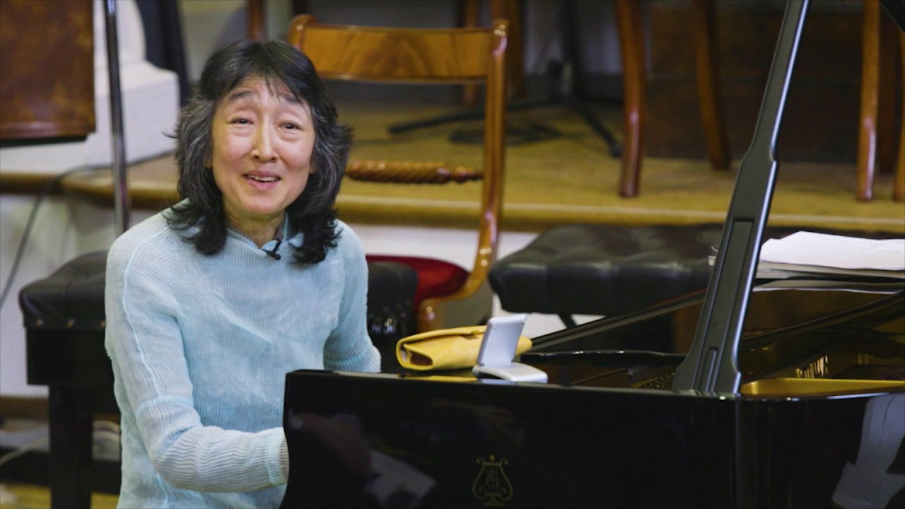

Hilary Hahn is a world-class, three-time Grammy Award–winning violinist that is renowned for her clear and brilliant musicality, expansive interpretations of an incredibly varied repertoire, and organic connections with her audience. She started playing the violin when she was three years old and has dedicated a majority of her life towards the furthering of her musical experience. She joined the Suzuki program, an internationally known music curriculum and teaching philosophy dating from the mid-20th century, until age five. After this, she studied under the tutelage of Jascha Brodsky at the Curtis Institute of Music in Philadelphia from age 10 to 17. By the age of 16, she had met her university requirements and from 17 to 19, she was coached with Jaime Laredo, Gary Graffman and Felix Galimir. Since then, she's continued to have occasional coachings and learn constantly from colleagues.
She has a particular love for a composer named Bach and made her 1997 debut recording entitle ″Hilary Hahn Plays Bach″ with some of his violin sonatas
and partitas. In addtion to playing traditional violin literature with amazing beauty and grace, she often goes against the grains of some traditional conventions.
Her latest commission, her first for solo violin and her first of a set of works from a single composer, is six partitas by Antón García Abril, which she
premiered in the United States, Europe and Japan.
García Abril was also one of the composers for In 27 Pieces: the Hilary Hahn Encores, Hahn’s multi-year commissioning project to bing back life to the duo encore genre.
She has an amazing ability to connect with her fans shown by her massive social media presence such as her art projects and her YouTube interview series, to her violin case’s
comments on life with a concert violinist on Twitter and Instagram.
Born in Atami, a seaside town close to Tokyo, Uchida moved to Austria when she was 12 years old with her diplomat parents. She gave her first Viennese recital at the age of 14 at the Vienna Musikverein. She enrolled at the Vienna Academy of Music to study with Richard Hauser and later, Wilhem Kempff and Stefan Askenase. In 1969, Uchida won the first place in the Beethoven Competition in Vienna and in 1970 the second place in the International Chopin Piano Competition. In 1975, she won second place in the Leeds Piano Competition.
Mitsuko Uchida brings a deep insight into the music she plays through her own quest for truth and beauty. Known for her interpretations of Mozart, Schubert, Schumann and Beethoven, she has also illuminated the music of Berg, Schoenberg, Webern and Boulez for a new generation of listeners. She is very passionate about the upringing and development of young musicians and is a trustee of the Borletti-Buitoni Trust and Director of the Marlboro Music Festival. Some of the major venues she has played at were the the Royal Festival Hall, Carnegie Hall, the Berlin Philharmonie and the Vienna Musikverein.
Though he started out playing drums in the fourth grade growing up in Chicago's South Side, it was when he took up the trumpet that Marquis Hill really found his niche. He attended high school at Kenwood Academy, excelling in its revered jazz–performance program, and was mentored by Bobby Broom, Willie Pickens, Tito Carrillo and other Chicago greats through the Ravinia Jazz Scholars program. A move to New York in 2014 helped him gain wider exposure and new opportunities. Since he has become an inernationally renowned musician, he has dabbled in genres like contemporary and classic jazz, hip-hop, R&B, Chicago house and neo-soul.
Ed Sheeran was born in February 1991 in Halifax, England. He began playing guitar at a young age and soon after started writing his own songs. When he was just a teenager, he moved to London to pursue his music, and his outpouring of creativity added up to several early EPs and hundreds of live shows. Drawing attention for his online performances, Sheeran hit No. 1 on the iTunes chart before he ever signed with a record label. Since signing with Atlantic, Sheeran has sold millions of records, had a song appear in the second installment of The Hobbit trilogy and won Grammys for hits like ″Thinking Out Loud″ (2014) and ″Shape of You″ (2017).